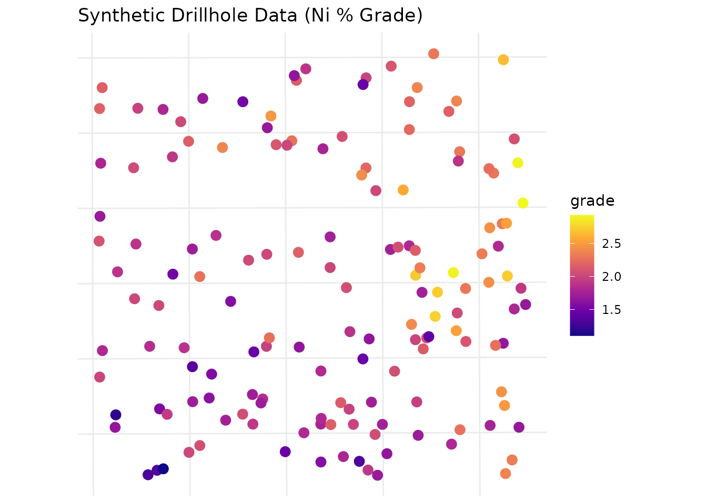
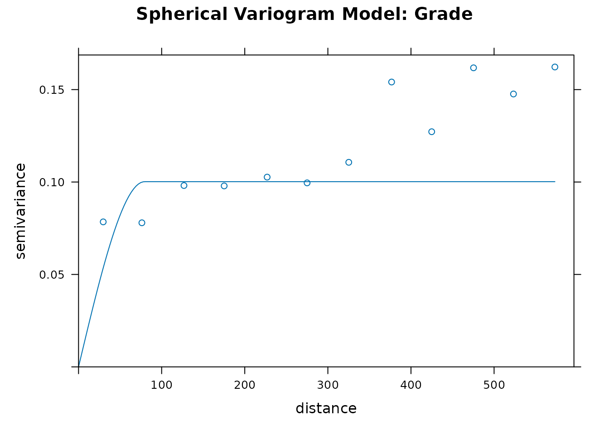
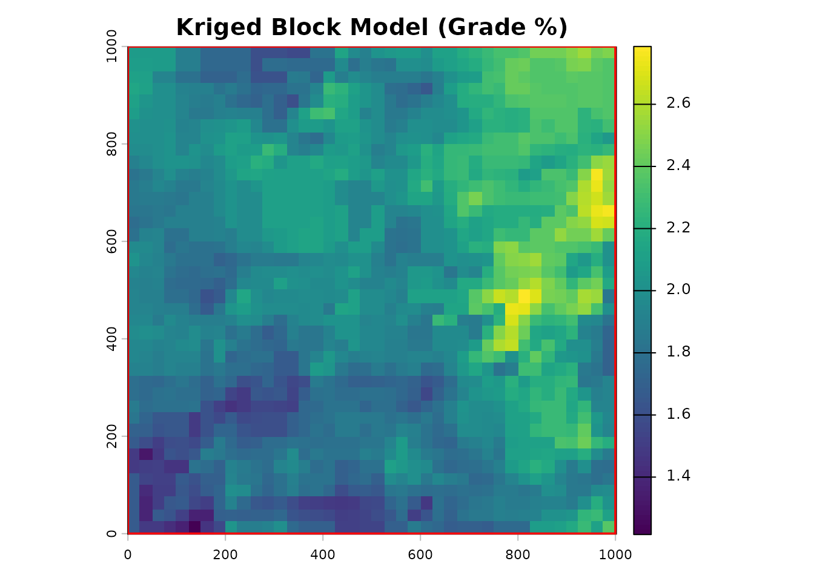
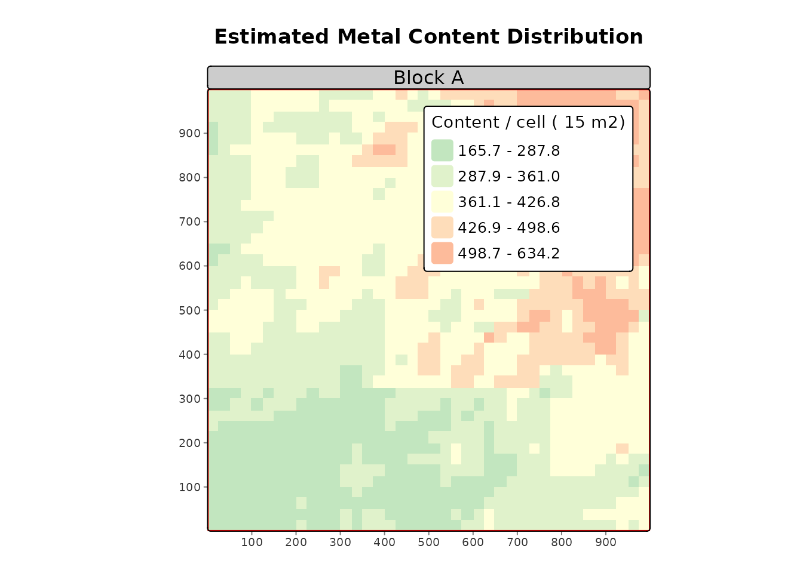

Introduction
The geosR package provides a generalized geostatistical
workflow to calculate spatial resources (volume, metal/content tonnage,
and average grades). This vignette demonstrates a complete, end-to-end
evaluation using generated synthetic data, reflecting best practices for
a Senior Geoscientist.
1. Exploratory Data Analysis (EDA) & Synthetic Data Generation
In a real-world scenario, you would import drillhole data via
st_read or st_as_sf. Here, we synthesize a
realistic spatial distribution representing a nickel laterite
deposit.
set.seed(42)
# 1. Generate a generic project boundary (Area of Interest)
bbox <- st_bbox(c(xmin=0, xmax=1000, ymin=0, ymax=1000), crs=32748)
area <- st_as_sf(st_as_sfc(bbox))
area$ID <- "Block_A"
# 2. Generate random drillhole points across the area
pts <- st_sample(area, size = 150, type = "random")
drill_data <- st_as_sf(pts)
# 3. Simulate geological variables (Grade and Thickness)
# We use a spatial trend (higher grades in the NE) + random noise
coords <- st_coordinates(drill_data)
trend <- (coords[,1] + coords[,2]) / 2000
drill_data$grade <- rnorm(150, mean = 1.5 + trend, sd = 0.3)
drill_data$thickness <- rnorm(150, mean = 5 + (trend * 5), sd = 1.5)
# 4. Clean outliers (Best Practice: Remove spurious data before modeling)
# We use geosR's built-in outlier removal on the raw vectors
cln_grade <- no_outlier(drill_data$grade)
# Visualize the raw drillhole grade distribution
ggplot(drill_data) +
geom_sf(aes(color = grade), size = 3) +
scale_color_viridis_c(option = "plasma") +
theme_minimal() +
labs(title = "Synthetic Drillhole Data (Ni % Grade)")
2. Variogram Modeling
A rigorous geostatistical estimate requires a well-fitted variogram.
We model the spatial continuity of the grade variable.
# Fit a spherical variogram model
# Note: In practice, parameters like 'cutoff' and 'sill' are iteratively refined via EDA.
var_model <- fit_var(
data = drill_data,
formula = grade ~ 1,
cutoff = 600,
width = 50,
model_type = "Sph",
sill = var(drill_data$grade) * 0.8, # Best practice: estimate sill from sample variance
range = 300
)
# Plot the experimental variogram and the fitted model
plot(var_model$variogram, var_model$model, main="Spherical Variogram Model: Grade")
3. Ordinary Kriging (Block Modeling)
With our variogram established, we generate a block model grid and predict attributes into un-sampled locations.
# Initialize a 25x25m block model grid
calc_grid <- st_make_grid(area, cellsize = 25)
# Kriging for Grade
kriged_grade <- est_krige(
data = drill_data,
formula = grade ~ 1,
grid = calc_grid,
vgm_model = var_model$model,
maxdist = 400, # Limit search radius
nmin = 3 # Require at least 3 drillholes for an estimate
)
#> [using ordinary kriging]
# Kriging for Thickness (using same spatial model for simplicity)
kriged_thick <- est_krige(
data = drill_data,
formula = thickness ~ 1,
grid = calc_grid,
vgm_model = var_model$model,
maxdist = 400,
nmin = 3
)
#> [using ordinary kriging]
# Visualize the kriged Grade predictions
grade_raster <- as(st_rasterize(kriged_grade["var1.pred"]), "SpatRaster")
plot(grade_raster, main = "Kriged Block Model (Grade %)")
plot(st_geometry(area), add=TRUE, border="red", lwd=2)
4. Resource Calculation
We calculate the total metric tonnage contained within our boundary
(area). We apply a specific gravity (density) of
1.6 for this material type (typical for laterite).
# Convert the sf predictions directly to terra SpatRasters for map algebra
thick_raster <- as(st_rasterize(kriged_thick["var1.pred"]), "SpatRaster")
# Execute core resource calculation
my_resources <- calc_res(
raster_grade = grade_raster,
raster_thickness = thick_raster,
area = area,
density = 1.6
)
# Review the tabular output (Polygon by Polygon)
knitr::kable(my_resources$table, digits = 2, format.args = list(big.mark = ","))| ID | area_m2 | avg_thickness_m | expected_volume_m3 | avg_grade | metal_content |
|---|---|---|---|---|---|
| 1 | 1,003,472 | 7.61 | 7,635,003 | 1.98 | 24,151,553 |
5. Evaluation and Reconciliation
A senior geologist’s job doesn’t end at estimation. We must evaluate modeled resources against actual mining recovery to build confidence factors.
# Assume the plant reported 15,000 tonnes of metal content recovered from this block
eval_table <- ev_rest(my_resources$table, actual_production = 15000)
# Display the reconciliation factor
knitr::kable(eval_table[, c("ID", "metal_content", "actual_production", "recovery_factor")],
digits = 3, format.args = list(big.mark = ","))| ID | metal_content | actual_production | recovery_factor |
|---|---|---|---|
| 1 | 24,151,553 | 15,000 | 0.001 |
Note: A recovery factor of < 1.0 indicates over-estimation by the block model.
6. Spatial Reporting (Plots)
Finally, we generate standardized, presentation-ready maps for management reporting.
# Generate map utilizing tmap architecture
plot_res(
tonnage_raster = my_resources$raster,
area = area,
title = "Estimated Metal Content Distribution",
subtitle = "Block A"
)
#> ℹ tmap modes "plot" - "view"
#> ℹ toggle with `tmap::ttm()`
#>
#>
#> ── tmap v3 code detected ───────────────────────────────────────────────────────
#>
#> [v3->v4] `tm_raster()`: instead of `style = "kmeans"`, use col.scale =
#> `tm_scale_intervals()`.
#> ℹ Migrate the argument(s) 'style', 'palette' (rename to 'values') to
#> 'tm_scale_intervals(<HERE>)'
#> [v3->v4] `tm_raster()`: use `col_alpha` instead of `alpha`.
#> [v3->v4] `tm_raster()`: migrate the argument(s) related to the legend of the
#> visual variable `col` namely 'title' to 'col.legend = tm_legend(<HERE>)'
#> [v3->v4] `tm_layout()`: use `tm_title()` instead of `tm_layout(main.title = )`
#> [plot mode] fit legend/component: Some legend items or map compoments do not
#> fit well, and are therefore rescaled.
#> ℹ Set the tmap option `component.autoscale = FALSE` to disable rescaling.